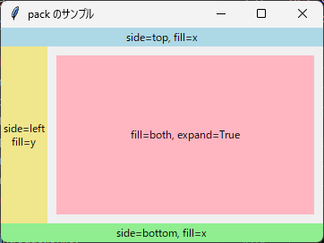
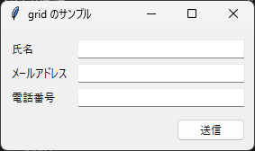
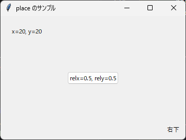
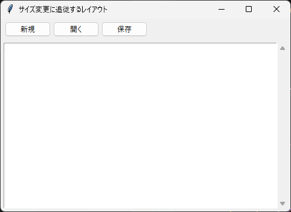

4. レイアウト管理
4.1 ジオメトリマネージャーとは
ウィジェットの位置と大きさを決める仕組みを、ジオメトリマネージャーと呼びます。tkinter には次の 3 種類のジオメトリマネージャーがあり、ウィジェットのメソッドとして呼び出します。
メソッド |
特徴 |
向いている用途 |
|---|---|---|
|
ウィジェットを上下左右の端から順に詰めて配置します。 |
ボタンを 1 列に並べる、領域を上下や左右に分ける |
|
ウィジェットを行と列からなる表のセルに配置します。 |
入力フォームなど、縦横をそろえて並べる画面 |
|
座標を指定して配置します。 |
ほかのウィジェットの上に重ねる場合など、特殊な配置 |
4.2 pack
pack は、親ウィジェットの空いている領域の端から、ウィジェットを順に詰めて配置します。主なオプションを次に示します。
オプション |
説明 |
|---|---|
|
詰める方向です。 |
|
割り当てられた領域いっぱいにウィジェットを広げる方向です。 |
|
|
|
ウィジェットの外側の余白（ピクセル）です。 |
|
ウィジェットの内側の余白（ピクセル）です。 |
|
割り当てられた領域の中での位置です。 |
fill と expand は混同しやすいオプションです。expand は「ウィジェットに割り当てる領域を広げるかどうか」を、fill は「割り当てられた領域の中でウィジェット自体を広げるかどうか」を指定します。
1"""第 4 章: pack によるレイアウトのサンプルです。
2
3side, fill, expand の違いを色付きのラベルで確認します。
4"""
5
6import tkinter as tk
7
8
9def main() -> None:
10 """pack の主なオプションを使ったウィンドウを表示します。"""
11 root = tk.Tk()
12 root.title("pack のサンプル")
13 root.geometry("360x240")
14
15 # 背景色を付けるため、ここでは ttk ではなく tk の Label を使います
16 top = tk.Label(root, text="side=top, fill=x", bg="lightblue")
17 top.pack(side="top", fill="x")
18
19 bottom = tk.Label(root, text="side=bottom, fill=x", bg="lightgreen")
20 bottom.pack(side="bottom", fill="x")
21
22 left = tk.Label(root, text="side=left\nfill=y", bg="khaki")
23 left.pack(side="left", fill="y")
24
25 center = tk.Label(root, text="fill=both, expand=True", bg="lightpink")
26 center.pack(side="left", fill="both", expand=True, padx=10, pady=10)
27
28 root.mainloop()
29
30
31if __name__ == "__main__":
32 main()

実行結果
pack は、呼び出した順に空いている領域を割り当てます。このサンプルコードでは上端と下端のラベルを先に配置したため、左端のラベルは上下のラベルに挟まれた高さになります。配置する順序を変えると、結果も変わります。
4.3 grid
grid は、ウィジェットを行（row）と列（column）で指定したセルに配置します。行と列の番号は 0 から数えます。主なオプションを次に示します。
オプション |
説明 |
|---|---|
|
配置するセルの行番号と列番号です。 |
|
ウィジェットがまたがる行数と列数です。 |
|
セルの中でウィジェットを寄せる方向です。 |
|
ウィジェットの外側の余白（ピクセル）です。 |
次のサンプルコードでは、ウィジェットをまとめる Frame（4.5 参照）の中に、入力フォームを作っています。
1"""第 4 章: grid によるレイアウトのサンプルです。
2
3ラベルと入力欄を表形式に並べた入力フォームを作ります。
4"""
5
6import tkinter as tk
7from tkinter import ttk
8
9
10def main() -> None:
11 """grid で配置した入力フォームを表示します。"""
12 root = tk.Tk()
13 root.title("grid のサンプル")
14
15 form = ttk.Frame(root, padding=10)
16 form.grid(row=0, column=0, sticky="nsew")
17
18 labels = ["氏名", "メールアドレス", "電話番号"]
19 for row, caption in enumerate(labels):
20 label = ttk.Label(form, text=caption)
21 label.grid(row=row, column=0, sticky="w", padx=(0, 10), pady=3)
22
23 entry = ttk.Entry(form, width=30)
24 entry.grid(row=row, column=1, sticky="ew", pady=3)
25
26 # 2 列にまたがるボタンを右寄せで配置します
27 submit = ttk.Button(form, text="送信")
28 submit.grid(
29 row=len(labels), column=0, columnspan=2, sticky="e", pady=(10, 0)
30 )
31
32 # ウィンドウを広げたとき、入力欄の列だけが伸びるようにします
33 root.columnconfigure(0, weight=1)
34 root.rowconfigure(0, weight=1)
35 form.columnconfigure(1, weight=1)
36
37 root.mainloop()
38
39
40if __name__ == "__main__":
41 main()

実行結果
columnconfigure と rowconfigure の weight については、4.6 ウィンドウサイズの変更への対応で説明します。
4.4 place
place は、座標を指定してウィジェットを配置します。主なオプションを次に示します。
オプション |
説明 |
|---|---|
|
親ウィジェットの左上を原点とする座標（ピクセル）です。 |
|
親ウィジェットの幅と高さに対する相対位置です。 |
|
親ウィジェットに対する相対的な幅と高さです。 |
|
ウィジェットのどの点を指定した座標に合わせるかを指定します。 |
x と relx のように絶対指定と相対指定を同時に指定すると、両者を足した位置になります。
1"""第 4 章: place によるレイアウトのサンプルです。
2
3絶対座標による配置と、ウィンドウに対する相対位置による配置を比較します。
4"""
5
6import tkinter as tk
7from tkinter import ttk
8
9
10def main() -> None:
11 """place で配置したウィジェットを表示します。"""
12 root = tk.Tk()
13 root.title("place のサンプル")
14 root.geometry("360x240")
15
16 # 左上から (20, 20) の位置に固定します。ウィンドウの大きさを変えても動きません。
17 fixed = ttk.Label(root, text="x=20, y=20")
18 fixed.place(x=20, y=20)
19
20 # ウィンドウの中央に配置します。ウィンドウの大きさに合わせて移動します。
21 center = ttk.Button(root, text="relx=0.5, rely=0.5")
22 center.place(relx=0.5, rely=0.5, anchor="center")
23
24 # 右下の角から 10 ピクセル内側に配置します
25 corner = ttk.Label(root, text="右下")
26 corner.place(relx=1.0, rely=1.0, x=-10, y=-10, anchor="se")
27
28 root.mainloop()
29
30
31if __name__ == "__main__":
32 main()

実行結果
place は自由に配置できる反面、フォントの大きさや OS が変わるとウィジェットが重なったりはみ出したりしやすくなります。通常の画面は pack と grid で作成してください。
4.5 Frame による入れ子構造
Frame は、ほかのウィジェットをまとめるための入れ物となるウィジェットです。画面を Frame でいくつかの領域に分け、それぞれの Frame の中にウィジェットを配置すると、複雑な画面も整理して作成できます。
ジオメトリマネージャーは親ウィジェットごとに選べます。たとえば、ウィンドウの中で Frame を pack で上下に並べ、ある Frame の中では grid を使う、という組み合わせができます。
4.6 ウィンドウサイズの変更への対応
grid で配置した画面は、既定ではウィンドウを広げても各セルの大きさが変わらず、余った領域は空白になります。余った領域をどの行や列に割り当てるかは、親ウィジェットの rowconfigure と columnconfigure で指定します。
frame.columnconfigure(0, weight=1) # 0 列目に余った幅を割り当てる
frame.rowconfigure(0, weight=1) # 0 行目に余った高さを割り当てる
weight の値は、余った領域を分配する比率です。既定値は 0 で、0 の行や列には余った領域が割り当てられません。セルが広がったときにウィジェットも広げるには、sticky もあわせて指定します。
次のサンプルコードは、上部のツールバーを pack で、下部の編集領域を grid で配置します。ウィンドウの大きさを変えると、Text だけが伸び縮みします。
1"""第 4 章: Frame の入れ子と、ウィンドウサイズの変更に追従するレイアウトのサンプルです。
2
3上部のツールバー (pack) と、下部の編集領域 (grid) を Frame で分けて配置します。
4"""
5
6import tkinter as tk
7from tkinter import ttk
8
9
10def main() -> None:
11 """サイズ変更に追従するウィンドウを表示します。"""
12 root = tk.Tk()
13 root.title("サイズ変更に追従するレイアウト")
14 root.geometry("480x320")
15
16 # ツールバー: ボタンを横一列に並べるので pack を使います
17 toolbar = ttk.Frame(root, padding=5)
18 toolbar.pack(side="top", fill="x")
19 for caption in ["新規", "開く", "保存"]:
20 ttk.Button(toolbar, text=caption).pack(side="left", padx=2)
21
22 # 編集領域: Text と Scrollbar を並べるので grid を使います
23 body = ttk.Frame(root, padding=5)
24 body.pack(side="top", fill="both", expand=True)
25
26 text = tk.Text(body, wrap="none")
27 text.grid(row=0, column=0, sticky="nsew")
28
29 y_scroll = ttk.Scrollbar(body, orient="vertical", command=text.yview)
30 y_scroll.grid(row=0, column=1, sticky="ns")
31 text.configure(yscrollcommand=y_scroll.set)
32
33 # 0 行 0 列 (Text のセル) だけが余った領域を受け取ります
34 body.rowconfigure(0, weight=1)
35 body.columnconfigure(0, weight=1)
36
37 root.mainloop()
38
39
40if __name__ == "__main__":
41 main()

実行結果
Text と Scrollbar は、互いのメソッドをオプションに指定して連携させています。この仕組みは第 8 章で説明します。
4.7 使い分けの指針
警告
同じ親ウィジェットの中で pack と grid を混在させることはできません。混在させると _tkinter.TclError が発生します。異なる方法で配置したい場合は、Frame で親ウィジェットを分けてください。
ジオメトリマネージャーは、次の指針で使い分けるとよいでしょう。
ウィジェットを 1 列に並べる場合や、画面を上下左右の領域に分ける場合は
packを使います。縦と横の位置をそろえたい場合は
gridを使います。複雑な画面は Frame で領域に分け、領域ごとに
packかgridを選びます。placeは、ほかの方法では実現できない配置に限って使います。